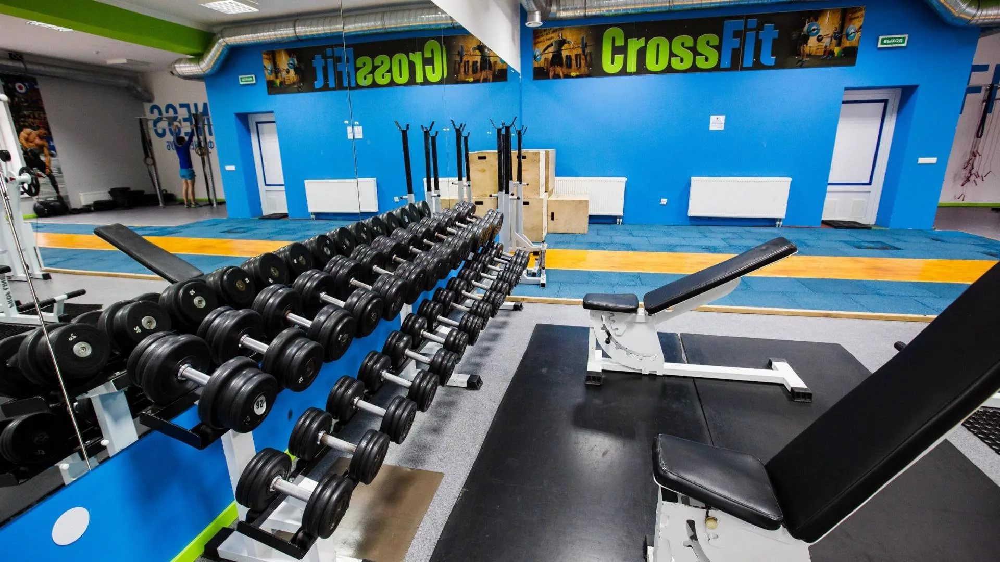
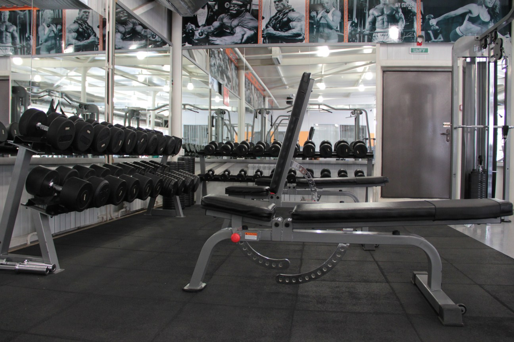

Наш спортклуб предлагает широкий спектр услуг в области фитнеса, бодибилдинга и силового атлетизма. В вашем распоряжении оснащенные современным оборудованием тренажерный зал (спортзал) и кардиозона, а также зал аэробики и танцев. Мы тщательно следим за последними тенденциями и методиками тренировок.Наши инструкторы подберут для Вас оптимальный график занятий и систему повышения нагрузок. У нас предусмотрена гибкая система скидок на клубные карты. Наши менеджеры помогут оптимизировать ваши расходы и выбрать вашу клубную карту.Профессиональное оборудование, индивидуальный подход к каждому клиенту и доступные цены помогут Вам совершенствоваться. Приглашаем всех желающих укрепить свое здоровье, а также получить заряд бодрости, позитива и хорошего настроения!
Скоро лето и отпуск. Времени на себя как всегда не хватает. А на пляже хочется выглядеть как минимум не хуже других)). Что делать если до отпуска месяц, а упрямые жиры никак не хотят уходить. Воспользуемся мезотерапией. Уберем упрямые отложения из самых трудных для похудения зон. Уменьшение объема начиная с первой процедуры. Уберем бока -"ушки", зоны под коленями, вдовий горб, уменьшим объем талии, рук, ног.Но и это еще не все. Сделаем суперлифтинг, уберем мешки под глазами, синяки, пигментацию. Вернем молодость вам и вашему лицу (необходима консультация специалиста).
Здоровый образ жизни с каждым днем становится все популярнее в нашей стране, и множество людей идут «стройными рядами» в разнообразные спортзалы и фитнес центры, где и занимаются укреплением своего здоровья. Но стоит сказать, что таких спортивных заведений в нашей стране просто не хватает на всех нуждающихся.
| Продукты, содержание в 100г | Белки | Жиры | Углеводы | Ккал |
|---|---|---|---|---|
| Хлеб ржаной | 4.7 | 0.7 | 49.8 | 214 |
| Хлеб пшеничный | 7.7 | 2.4 | 53.4 | 254 |
| Сдобная выпечка | 7.6 | 4.5 | 60.0 | 297 |
| Баранки | 10.4 | 1.3 | 68.7 | 312 |
| Сушки | 11.0 | 1.3 | 73.0 | 330 |
| Сухари пшеничные | 11.2 | 1.4 | 72.4 | 331 |
| Гречневая ядрица | 12.6 | 2.6 | 68.0 | 329 |
| Манная крупа | 11.3 | 0.7 | 73.3 | 326 |
| Овсяная крупа | 11.9 | 5.8 | 65.4 | 345 |